Обзор
По мере увеличения размера проектов количество объектов, включенных в один уровень, может естественным образом увеличиваться, что приводит к захламленной и неорганизованной среде проектирования уровней.
Это частично преодолевается за счет работы с несколькими слоями, которым могут быть назначены объекты в Level Explorer. Кроме того, Engine также позволяет создавать ссылки или ассоциации между несколькими объектами, так что любые изменения, внесенные в один объект, автоматически влияют на другие, с которыми он может быть связан.
Эти ассоциации бывают трех основных типов; Группы, родительские и дочерние ссылки и ссылки на объекты.
Группировка
Группировка помещает несколько объектов в контейнер, которым затем можно манипулировать как одним объектом. По умолчанию объекты, включенные в группу, нельзя редактировать независимо, если группа не открыта.
Функциональность
Создание группы
Для создания группы объекты, которые необходимо включить в нее, необходимо выбрать одним из следующих способов:
- Нажимая на них по отдельности в окне просмотра, удерживая кнопку Ctrl ключ или ;
- Перетаскивание рамки выбора вокруг нескольких объектов в окне просмотра.
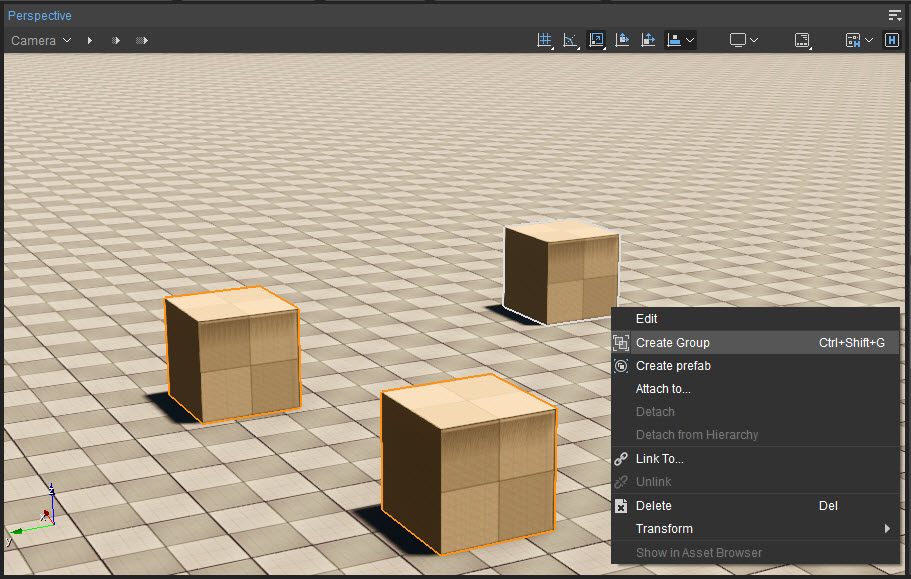
Создание группы
Щелчок правой кнопкой мыши по любому из выбранных объектов вызывает контекстное меню с Создать группу вариант, как показано на изображении выше.
После создания вокруг группы будет отображаться ограничивающая рамка вместе с точкой поворота для конкретной группы, которая помогает упростить выбор группы и манипулирование ею в целом через область просмотра.
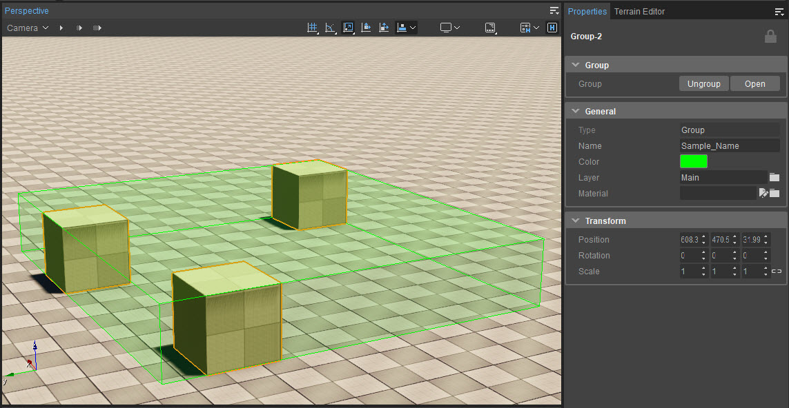
Ограничивающая рамка
На панели «Свойства» дополнительно отображаются следующие параметры, специфичные для группы, когда группа создается или выбрана.
Разгруппировать/Открыть
Разгруппировать отбрасывает связь, существующую между объектами группы, так что каждый из них возвращается в исходное индивидуальное состояние.
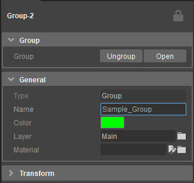
Разгруппировать/Открыть
Открыть В то же время этот параметр позволяет индивидуально редактировать, перемещать, трансформировать, вращать или масштабировать объекты, содержащиеся в группе, не затрагивая групповую связь между ними, как показано ниже.
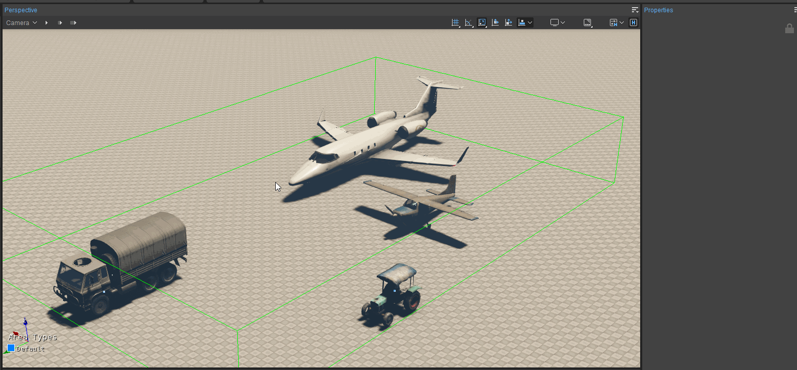
Открытая группа
Общий
Вкладка «Общие» содержит параметры изменения имени, цвета ограничительной рамки и материала, назначенного выбранной группе в целом.
Трансформировать
Содержит параметры перемещения, поворота и масштабирования объектов, включенных в группу в целом.
Прикрепить к...
Прикрепить к... Опция позволяет добавлять другие объекты и группы в существующую группу.
Это делается:
- Выбор нужного объекта из видового экрана;
- Щелкнув правой кнопкой мыши по объекту и выбрав Прикрепить к... вариант;
- Выбор целевой группы, в которую необходимо добавить выбранный объект.
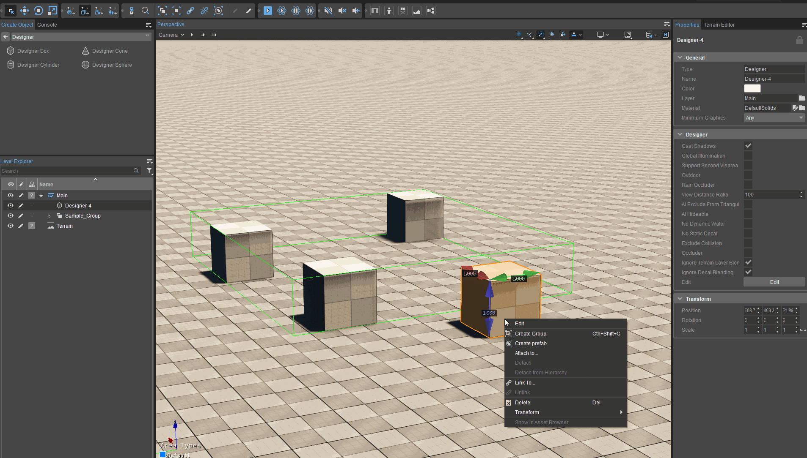
Прикрепить к...
Возникли проблемы с выбором целевой группы? Активируйте помощников, нажав кнопку
Также обратите внимание, что как только Прикрепить к... выбрана опция, следующий щелчок мыши должен выбрать группу назначения выбранного объекта.
Отсоединить
Отсоединить Опция удаляет выбранный объект из группы.
Это делается:
- Открытие группы объектов с помощью кнопки Открыть кнопка на панели свойств группы;
- Выбор нужного объекта из видового экрана;
- Щелкнув правой кнопкой мыши по объекту и выбрав Отсоединить вариант.
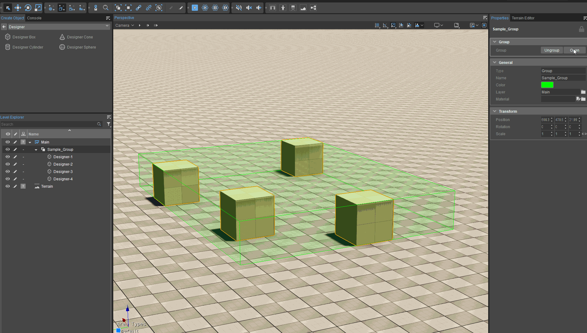
Отсоединить
Альтернативно, объекты можно присоединять к группам или отсоединять от них из Уровень -> Группа -> Прикрепить к.../Отсоединить параметры главного меню, которое также содержит параметры для создания, открытия, разгруппирования и закрытия групп.
Импорт/экспорт сгруппированных объектов
Выбранную группу можно сохранить как внешний файл OBJ из Уровень -> Экспортировать выбранные объекты опция главного меню. Ранее сохраненные группы можно затем импортировать на уровень с помощью кнопки Обозреватель активов.
Связывание
В отличие от группировки, связывание создает между объектами иерархию «родитель-потомок», так что любые физические преобразования, примененные к родительскому объекту, автоматически распространяются на его дочерние элементы.
Однако преобразования, примененные к дочернему объекту, не влияют на его родителя. Более того, хотя группировка по существу создает контейнер вокруг выбранных объектов в области просмотра, этот контейнер/группа не существует в коде игры и не может иметь каких-либо логических отношений между членами группы.
С другой стороны, объекты «родитель-потомок» могут демонстрировать логические отношения в игровом коде.
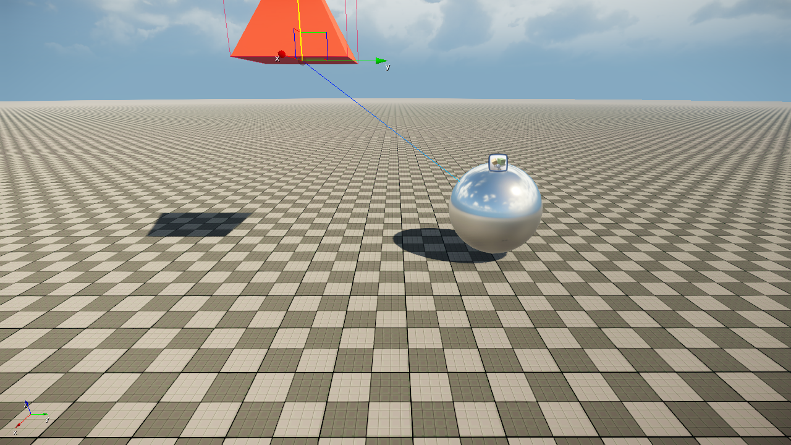
Перемещение дочернего объекта
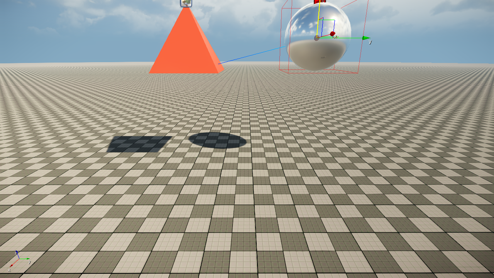
Перемещение родительского объекта
Связывание не работает с объектами кисти static; только Сущность объекты типа могут быть связаны.
Функциональность
Создание ссылки
Чтобы создать связь родитель-потомок между двумя объектами в области просмотра:
- Выберите нужный дочерний объект, щелкните его правой кнопкой мыши и нажмите кнопку Ссылка на...;
- Выберите целевой родительский объект сразу после того, как показано.
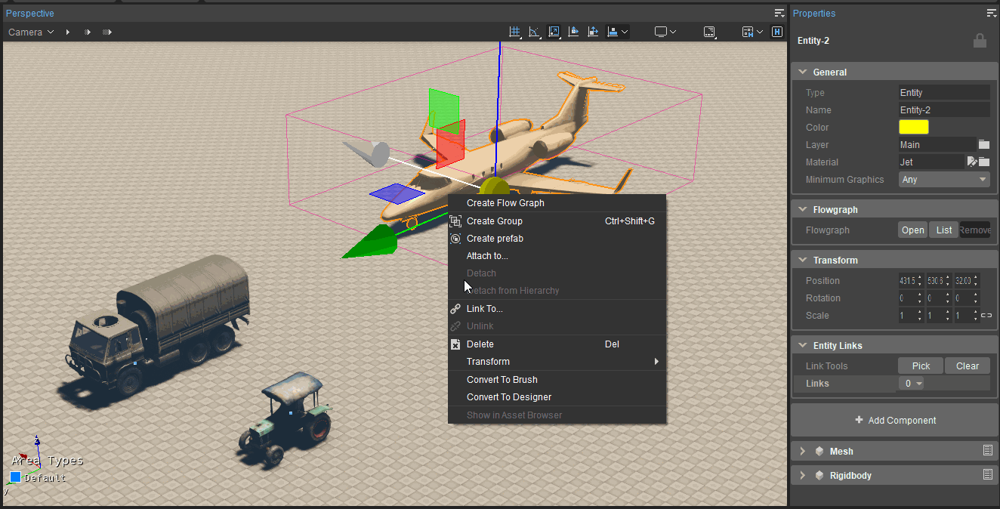
Привязка и отмена привязки
Связь с костями персонажа
Сущности также можно прикреплять к персонажам с помощью скелетных сеток, создавая ссылку для прикрепления кости. Это особенно полезно для персонажей, которые будут выбирать/перемещать объекты внутри сцены.
Чтобы связать объект типа Entity с костью персонажа:
- Выберите нужный объект, щелкните его правой кнопкой мыши и нажмите кнопку Ссылка на...;
- Удерживайте кнопку Сдвиг кнопку и выберите целевой персонаж, щелкнув по нему один раз в окне просмотра; это отображает список костей персонажа во всплывающем меню.
- Выберите целевую кость, щелкнув ее список во всплывающем меню.
Отсоединить
Аналогично, щелкнув правой кнопкой мыши дочерний объект и выбрав Отсоединить вариант удалит все его ссылки и зависимости.
Альтернативно, объекты могут быть связаны и отсоединены от Ссылка -> Связать/отменить связь опции главного меню или через
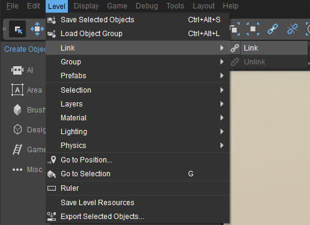
Ссылка -> Связать/отменить связь
Чтобы связать два объекта, используя любой из двух методов:
- Выбрать Ссылка -> Ссылка вариант из главного меню или
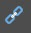
- Щелкните объект, который будет дочерним в новой ссылке, удерживайте нажатой клавишу LMB и перетащите указатель мыши между этим дочерним объектом и его целевым родительским объектом.
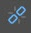
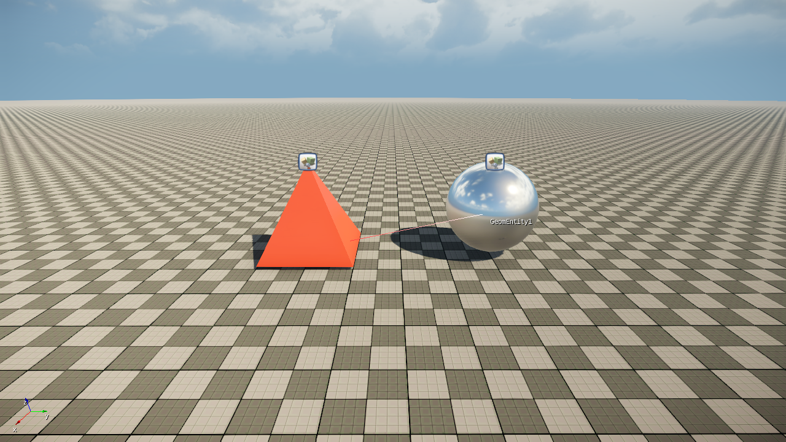
Ссылка в процессе
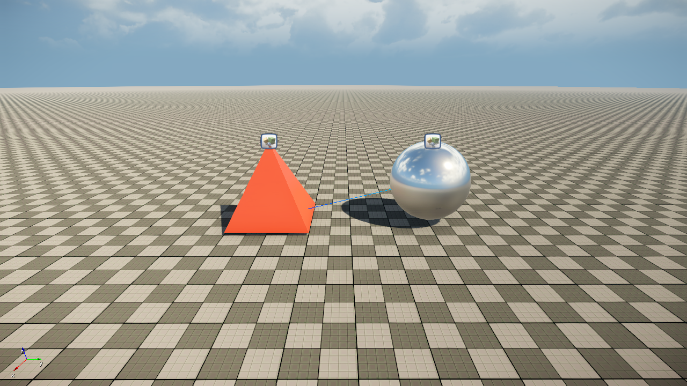
Ссылка завершена
Кроме того, объекты также можно группировать/связывать из Level Explorer, чтобы:
- Перетаскивание объекта в группу или префаб добавляет объект в группу или префаб;
- Перетаскивание объекта на слой перемещает его в этот слой;
- Перетаскивание объекта на другой объект создает отношения «родитель-потомок» между двумя объектами;
- При перетаскивании объекта типа Entity на другой объект типа Entity, имеющий кости, отображается меню, с помощью которого первый объект можно связать либо с определенной костью, либо с самим целевым объектом.
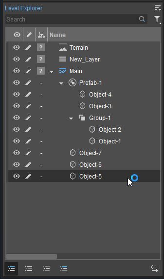
Level Explorer Группировка/связывание
Ссылки на сущности
Третий вид связи, которая может существовать между объектами, — это ссылка на сущность.
Entity Link просто представляет собой логическую связь, существующую между Сущность введите объекты, и любое изменение, внесенное в сущность внутри Entity Link, не влияет на другую.
Такие логические связи между сущностями можно использовать для создания сценариев последовательностей событий, используя Flow Graph например, где GetEntity узел получает созданные ссылки на сущности.
Функциональность
Создание и удаление ссылки на сущность
Чтобы связать несколько объектов с помощью ссылок на сущности:
- Выберите первую ецелое и прокрутите вниз до Ссылки на сущности раздел на панели «Свойства».
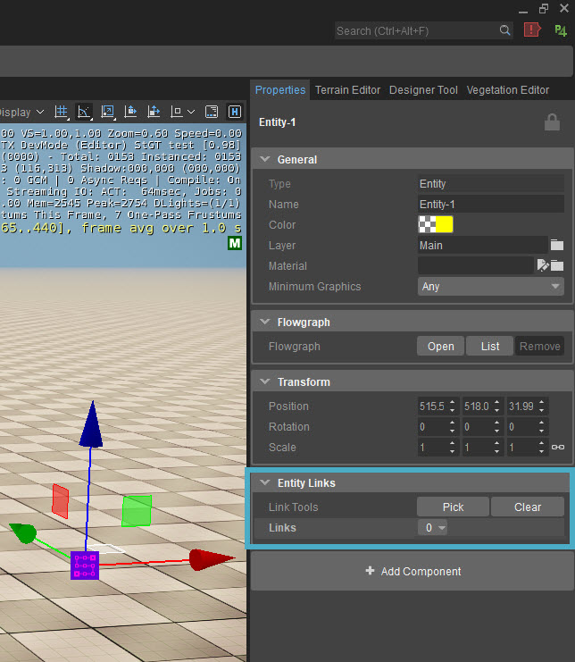
Раздел «Ссылки на сущности». - Нажмите Выбрать и выберите целевой объект типа сущности, с которым необходимо связать выбранную в данный момент сущность. Зеленая линия будет означать, что процесс связывания успешно завершен.
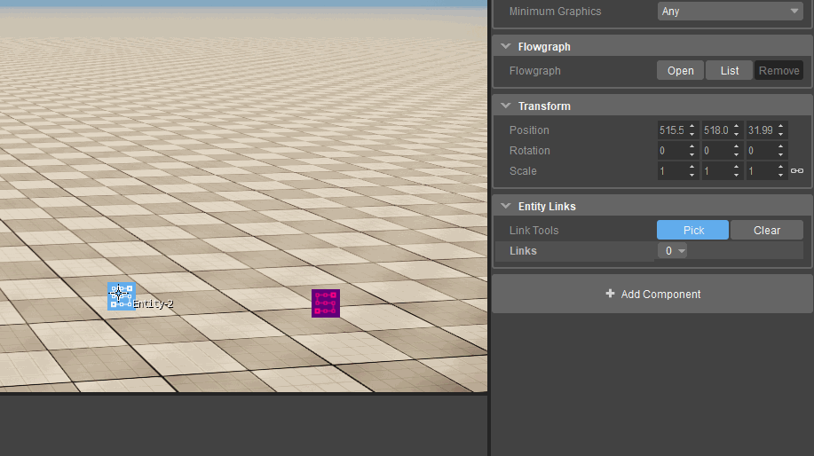
Выбрать - Пользователи могут продолжать выбирать несколько объектов, чтобы связать выбранный в данный момент объект, или редактировать свойства текущей ссылки на панели «Свойства». Выбор Очистить опция отменяет все созданные ссылки на сущности при нажатии
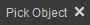
Не видите зеленую линию между связанными объектами?
Убедитесь, что объект отображенияСсылка включено в настройках редактора по адресу Правка->Настройки->Видовой экран->Общие. 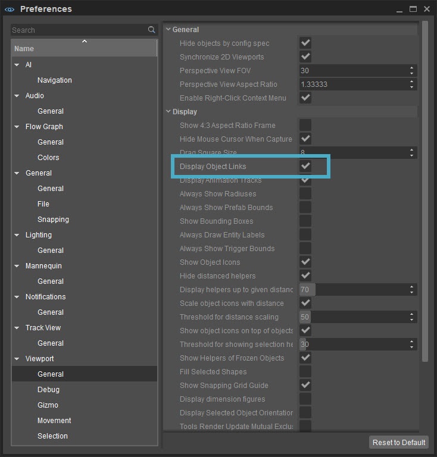
Ссылка на объекты отображения
Переименование
Имя поле под Ссылки Раздел можно отредактировать, чтобы предоставить ссылкам на сущности собственное имя.
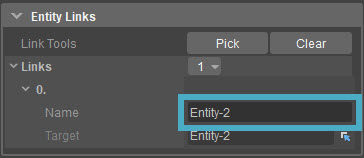
Переименование
Замена целей
Чтобы заменить целевой объект любой конкретной ссылки на объект, нажмите кнопку Стрелка кнопка
Ссылки во время выполнения с использованием Flow Graph
Объекты можно связывать и отсоединять во время игры с помощью Flow Graph используя ChildAttach и ChildDetach Узлы сущностей соответственно.